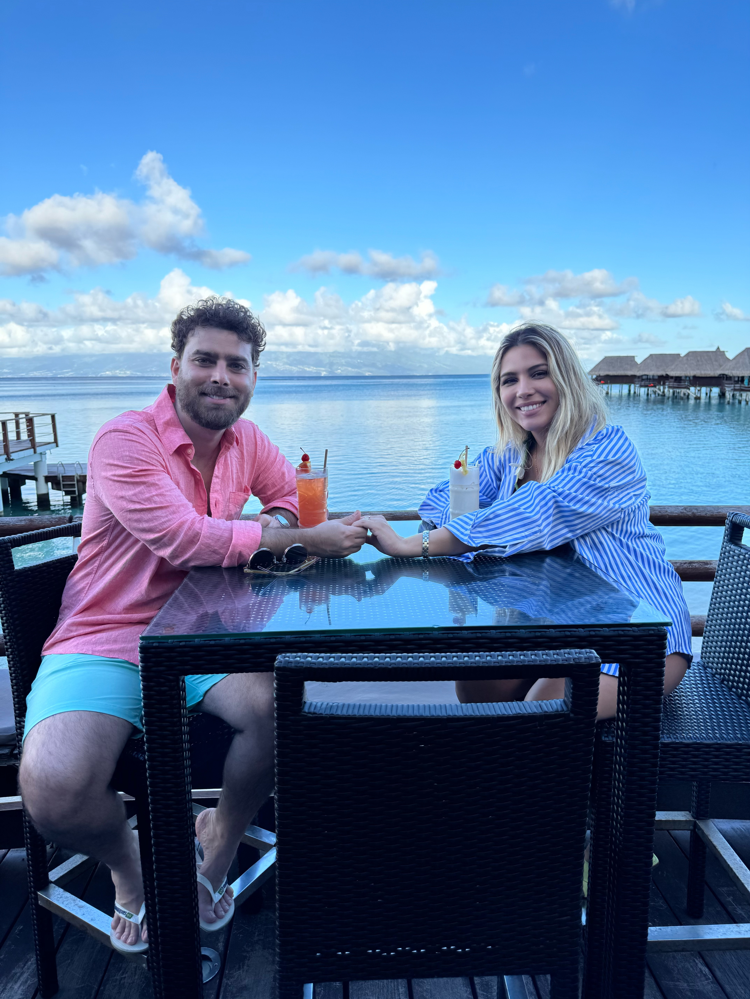
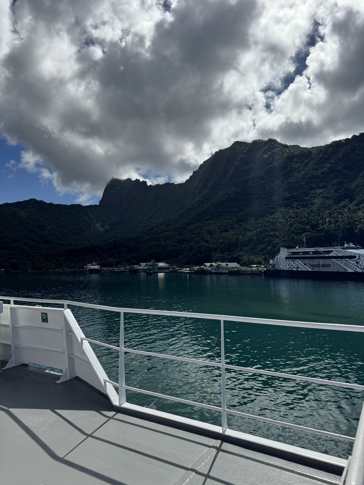

Em um café no centro de São Paulo, Lari Colares, de 32 anos, mostra no celular fotos de suas aventuras. Machu Picchu, Santorini, Tóquio, Maldivas... São 47 países carimbados no passaporte. O que mais impressiona não são os destinos, mas como ela conseguiu visitar todos eles.
"Nunca paguei mais de R$ 800 em uma passagem internacional", revela com um sorriso discreto. "A maioria das pessoas não acredita quando conto isso."
🌍 A jornada começou por necessidade
A história de Lari não começou com privilégio. Filha de uma professora e um técnico em eletrônica, ela cresceu em uma família de classe média em Campinas. "Viagem sempre foi sonho distante. Meus pais guardavam o ano inteiro para conseguir passar 5 dias numa praia."
Aos 20 anos, cursando Engenharia de Sistemas na Unicamp, Lari recebeu uma proposta de intercâmbio na Alemanha. O problema: custava R$ 12.000 só a passagem.
"Era inviável. Minha família não tinha esse dinheiro. Foi quando comecei a pesquisar alternativas obsessivamente. Sabia que tinha que existir uma forma mais barata."
Primeira descoberta: R$ 12.000 viraram R$ 900
Depois de 3 semanas de pesquisa, Lari encontrou um voo São Paulo-Berlim por R$ 900 via conexões estratégicas. A economia: 92%.
🔍 O método nasceu da curiosidade
Durante o intercâmbio na Alemanha, Lari não conseguia parar de pesquisar preços de passagens. "Comecei a notar padrões estranhos. O mesmo voo custava preços completamente diferentes dependendo de onde você olhava."
Como estudante de engenharia, ela decidiu investigar tecnicamente:
- Mapeou 47 sites diferentes de passagens aéreas
- Descobriu que agentes de viagem tinham acesso a preços especiais
- Identificou horários específicos quando os melhores preços apareciam
- Encontrou "bugs" nos sistemas que geravam preços ultrabaratos
O resultado? Em 6 meses na Europa, ela visitou 12 países gastando menos de R$ 2.000 em todas as passagens somadas.
🗺️ Os primeiros 12 países (6 meses)
🚀 O retorno e a obsessão
De volta ao Brasil, Lari não conseguia mais viajar do jeito "normal". "Era impossível pagar R$ 3.000, R$ 4.000 numa passagem sabendo que existiam formas de conseguir por R$ 500, R$ 600."
Ela transformou a busca por passagens baratas em uma ciência. Desenvolveu planilhas, algoritmos simples, calendários de monitoramento. O resultado: nos 10 anos seguintes, visitou mais 35 países.

📊 Alguns recordes pessoais de Lari:
- São Paulo → Tóquio: R$ 650 (tarifa normal: R$ 4.200)
- São Paulo → Maldivas: R$ 750 (tarifa normal: R$ 5.800)
- São Paulo → Nova York: R$ 420 (tarifa normal: R$ 2.100)
- São Paulo → Londres: R$ 380 (tarifa normal: R$ 3.200)
- Volta ao mundo (5 países): R$ 1.200 total
💰 Total economizado em 12 anos
Se Lari tivesse comprado todas as passagens pelos preços "normais", teria gastado mais de R$ 180.000. Ela gastou R$ 28.000. Economia: R$ 152.000.
🤫 O segredo que virou obsessão
"Por muito tempo, guardei essas estratégias só para mim", admite Lari. "Era meu 'superpoder'. Enquanto amigos economizavam o ano inteiro para uma viagem, eu viajava 4, 5 vezes no mesmo período."
A virada veio em 2022, quando uma amiga próxima cancelou uma viagem dos sonhos porque "estava muito caro".
"Ela ia desistir de conhecer a Grécia porque a passagem custava R$ 3.500. Em 20 minutos, encontrei a mesma viagem por R$ 650. Foi quando percebi que precisava compartilhar isso."
🎯 O nascimento do Sistema GPS
Em dezembro de 2024, Lari sistematizou seu método em um curso online. "Sistema GPS de Passagens" — GPS porque, como ela diz, "te leva ao destino pelo caminho mais eficiente".
O curso não ensina apenas a encontrar passagens baratas, mas revela:
- Os 7 sistemas que as companhias aéreas usam internamente
- Horários específicos quando os melhores preços são liberados
- Códigos de aeroportos alternativos que reduzem preços em até 70%
- Estratégias de conexão que transformam viagens caras em ultrabaratas
- Automações simples que monitoram preços 24/7
Resultado em 14 meses: 15.000 alunos
O Sistema GPS já ajudou mais de 15.000 brasileiros a economizar em passagens. A economia média é de R$ 2.400 por viagem.
💭 A filosofia por trás do método
Para Lari, viajar barato não é sobre ser "mão de vaca" ou sacrificar qualidade. "É sobre inteligência. Por que pagar R$ 3.000 se você pode pagar R$ 600 pelo mesmo serviço?"
Ela desenvolveu uma filosofia própria sobre viagens:
"Viagem não deveria ser luxo de rico. Todo brasileiro que trabalha deveria conseguir conhecer o mundo sem comprometer o orçamento familiar. O problema não é falta de dinheiro, é falta de informação."

🌟 O impacto em números
O trabalho de Lari já gerou impacto mensurável na vida de milhares de pessoas:
- 15.000+ alunos formados no Sistema GPS
- R$ 36 milhões em economia coletiva dos alunos
- 127 países diferentes visitados pelos alunos
- 94% de aprovação nas avaliações do curso
- Clube VIP com 3.000 membros ativos
🔮 Os planos para o futuro
"Meu sonho é que daqui 10 anos nenhum brasileiro precise pagar preço cheio em passagem aérea", revela Lari. "Quero democratizar completamente o acesso ao mundo."
Os próximos projetos incluem:
- Aplicativo automatizado do Sistema GPS
- Parcerias diretas com companhias aéreas
- Expansão para hotéis e pacotes completos
- Sistema GPS em outros países da América Latina
🚀 Aprenda o método de Lari
Tenha acesso ao mesmo sistema que permitiu Lari visitar 47 países pagando menos que aluguel. Método testado por 15.000+ brasileiros.
🎯 Quero Aprender o Sistema GPS🏆 O legado de uma viajante
Aos 32 anos, Lari já visitou mais países que a maioria das pessoas visitará na vida inteira. Mas seu verdadeiro legado não são as carimbadas no passaporte.
"O que mais me orgulha não são os lugares que visitei, mas as pessoas que consegui ajudar a realizar seus sonhos", reflete ela.
"Quando recebo a mensagem de alguém dizendo 'finalmente consegui levar meus pais para conhecer a Europa' ou 'realizei meu sonho de lua de mel nas Maldivas'... isso não tem preço. É para isso que faço o que faço."
E para quem ainda duvida que seja possível viajar tanto pagando tão pouco, Lari tem uma resposta simples:
"Não é mágica, não é sorte, não é privilégio. É método. E método pode ser aprendido."
🎯 Próximos destinos de Lari (2026)
Meta: chegar aos 50 países ainda em 2026, sempre pagando menos de R$ 800 por passagem